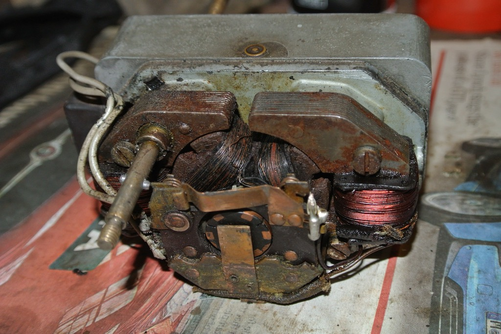
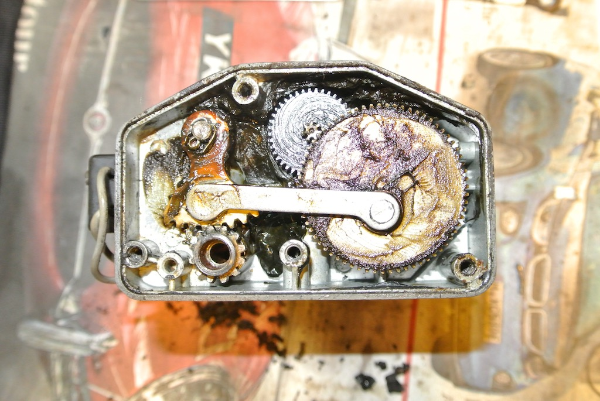
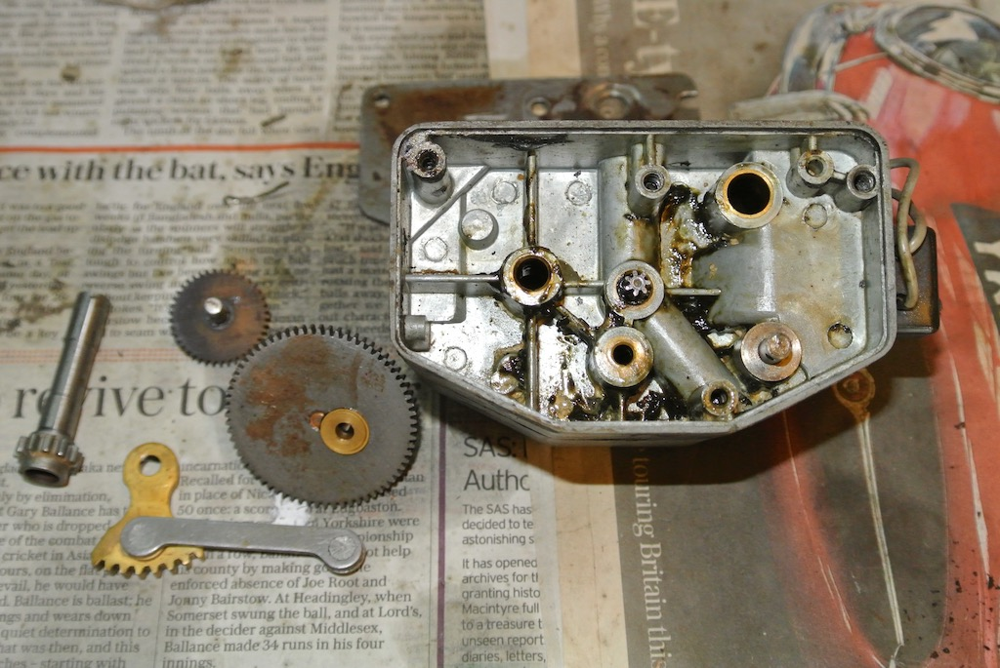
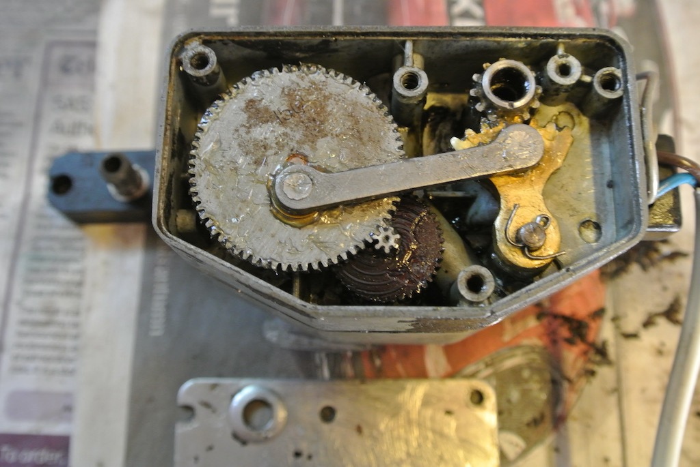
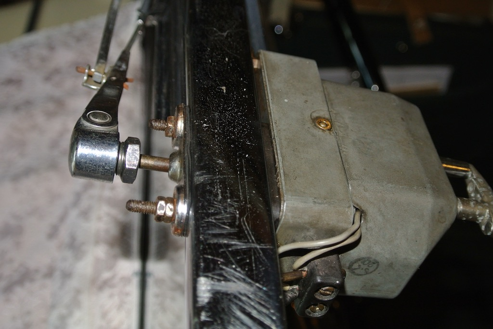

We had been asked to take the TC along to the Lyminster Fete on Saturday 22nd July 2017. In addition to half a dozen MGs there were also three Austins on show, two 7s and a larger vehicle, plus a Jaguar, a VW and another German model. It was a good, well supported fete, with lots of variety. However, just after one o'clock it started to rain and continued until three, when we left; although we were not the first classic car to leave.
However, as we were preparing to leave, in the rain, Angela suddenly said "There's smoke coming from the wiper motor!" So we made the 18 mile return journey by manually wiping the window each time it became too difficult to see out, something that the TC wiper motor allows you to do.
Consequently I thought it prudent to remove the wiper motor and strip it down. This photo shows the electrical side of the unit when it was on the bench. All the windings seem fine (passed continuity tests), with no evidence that anything had burnt out. However, it does look as though some new brushes are required.
   These photos show the mechanical side of the wiper motor, as it was, dismantled and cleaned, and finally reassembled having been greased.
The outer case has lost most of its black, wrinkly paint, but it had also lost all of the gaskets that try to prevent water getting into the unit. So the original 'smoke' was probably steam!
I cut gaskets from the remains of an old cycle inner tube in the hope that this will prevent water ingress.
So far the wiper motor has worked smoothly and there has been no sign of 'smoke'.
© David James 2017 Last updated: 8th September 2017